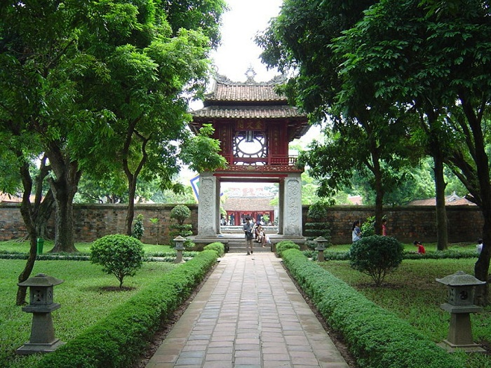
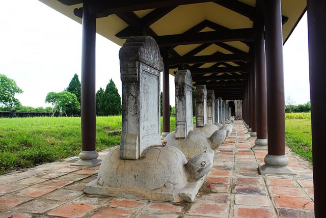
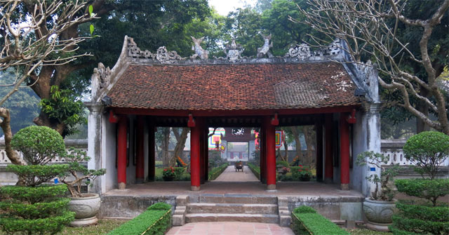
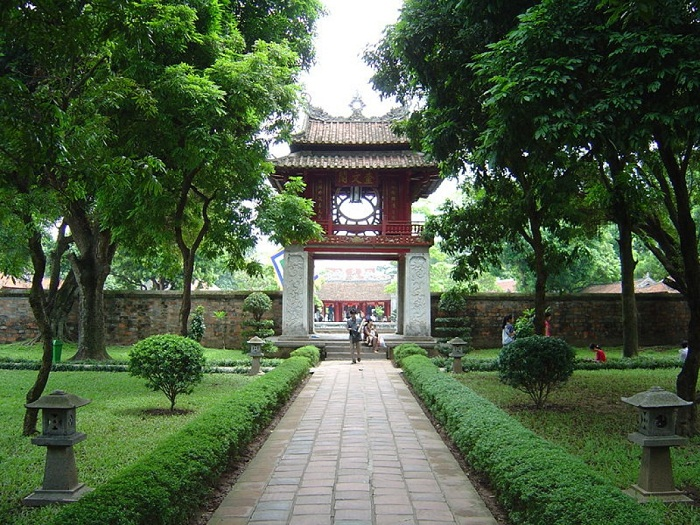
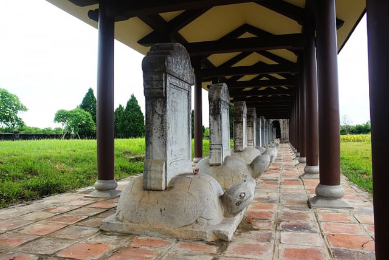
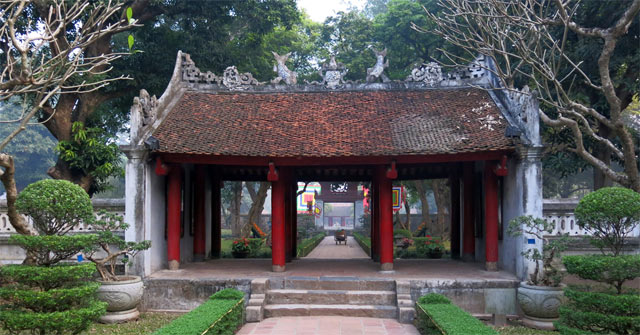

Quoc Tu Giam Temple
Name: Quoc Tu Giam Temple or Temple of Literature.
Location: 58 Quoc Tu Giam, Van Mieu, Dong Da, Ha Noi, Viet Nam.
Built: 1070.
Description: Quoc Tu Giam - the first university in Vietnam. Quoc Tu Giam Temple are two works built to teach and worship Confucius and ancient Confucian sages. The Temple of Literature was built in 1070 under King Ly Thanh Tong, and Quoc Tu Giam was built in 1076, under King Ly Nhan Tong.

Activies
Quoc Tu Giam is a very famous tourist destination in Vietnam with its unique architecture and long history. As the first university in Southeast Asia and also a place of worship for Confucius and the ancient geniuses, Vietnamese people, especially students, often come here to pray for luck in their studies and works. Moreover, just before the Vietnamese New Year celebration Tết, calligraphists will assemble outside the temple and write wishes in Hán characters. The art works are given away as gifts or are used as home decorations for special occasions.
Note: do not harm relics, do not rub turtle's head, draw or sit on doctor's stele; dress discreetly and neatly; no smoking, profanity, disorder and security; not organizing gambling or fraud; environmental landscape protection; do not bring weapons, explosives, flammable substances into the relic.
Other Images
 




